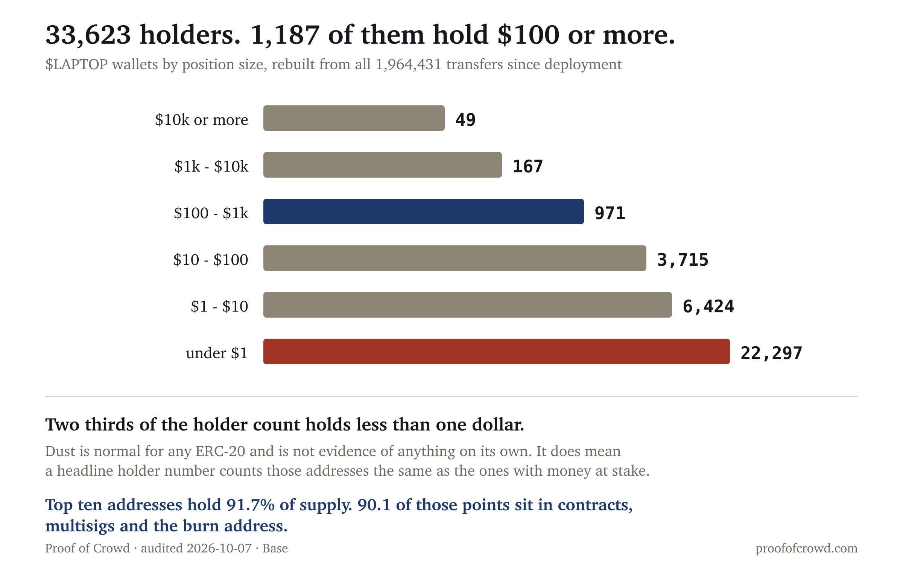

| Metric | Value | Read |
|---|---|---|
| Spam share vs the token's own norm | 0.132 vs 0.391 (0.34x) | clean, falling |
| Cross-token accounts | 0.0% | no paid-promotion signature |
| Creator concentration (top 3) | 73.5% | concentrated |
| Repeated wording across accounts | 16.0% | elevated, and quotation |
| Founder allocation | 300,000,000 intact | nothing sold |
| Founder allocation lock | 2-of-3 multisig, no timelock | not a vesting contract |
| Holders with $100+ | 1,187 of 33,623 | 3.5% of the headline count |
| Supply in individual hands | roughly 8–10% | trackers imply ~36% |
| Manufactured score | 25/100 | organic (under 30) |
Score computed with the published formula in the open hype-detector project: spam lift 0.0, spam share 2.6, concentration 22.1, sentiment uniformity 0.0.
Top-three creator concentration measures 73.5%, which is the one figure on this report an informed reader should push back on. Measured over the thirty days to 2026-10-07 across 1,000 posts from 631 distinct creators, a single account held 95.6% of all interactions.
That account is the founder's own, with a following built long before this token existed.
Concentration measures distribution, not manipulation. A person with a large existing audience will concentrate a small token's conversation simply by posting, and the measurement cannot tell that apart from a small number of accounts being paid to dominate. It is reported because it is elevated and a reader deserves to see it, not because it is evidence on its own. What distinguishes the two cases is §4.
16.0% of posts are near-duplicates appearing across more than one account. Against a live Bitcoin control pulled the same day, $LAPTOP runs 15.6% to Bitcoin's 10.6%.
The content of the largest cluster matters more than its size. It is people quoting the founder's own line — “a month ago we launched LAPTOP, here's how I rugpulled you” — back at him. The remaining clusters are a repeated interview announcement and a repeated remark about meme-coin policy.
Duplication produced by a news cycle and duplication produced by a paid campaign are the same measurement and different things. Here the duplicated text is quotation of one widely-read thread, which is why an elevated figure is not treated as an adverse finding.
0.0% of interactions come from accounts that also post about three or more other tokens. Of 36 accounts measured against a 26-token basket, the median account posts about zero other tokens and the maximum is one.
This is the hardest signal to fake and the one that most directly addresses the founder's public claim that no influencers were paid. Paid promotion leaves a specific trace: accounts that post about many unrelated tokens because that is their business. There is no such population here.
This does not establish that nobody was paid. It establishes that the accounts carrying the conversation are not the multi-token promotion crowd, and that whatever is driving attention is not that network.
Supply was reconstructed from all 1,964,431 Transfer events since the contract was deployed. The rebuilt balances sum to exactly 1,000,000,000, which is the check that the reconstruction is complete rather than sampled.

The headline holder count is 33,623, and 1,187 of those hold a position worth $100 or more at the current price. Dust is normal for any ERC-20 and is not evidence of anything by itself, but two thirds of this token's holders hold less than a dollar, and a headline holder number counts them the same as the addresses with money at stake.
Concentration is the finding that matters, and it is not the founders' 30%. The top ten addresses hold 91.7% of supply, and 90.09 percentage points of that sits in contracts, multisigs or the burn address rather than individual wallets. Only 1.61 points of the top ten is an ordinary wallet.
Roughly 8–10% of supply sits in individual hands. Price trackers report a market capitalisation against a fully diluted valuation implying about 36% circulating; the chain does not support a float that large.
The project has already burned 17,500,001 tokens, 1.75% of supply.
Verified independently on 2026-10-07 from Base, five days after the project's own report last checked: the founder allocation address 0xd81bf90a51b7ffe69722c62168416fa2654fa818 holds exactly 300,000,000 LAPTOP, 30% of supply, intact. The claim that the founders have not sold is true and anyone can confirm it.
The claim that does not hold is the word “locked”. That address is not a vesting contract and not a timelock. It is a Gnosis Safe multisig with 3 owners and a signing threshold of 2, confirmed by the Safe proxy bytecode, a singleton pointer in storage slot 0, and live getOwners() and getThreshold() calls. Nothing on chain prevents those tokens from moving. Two of three signers can transfer all 300 million at any moment.
Four of the ten largest holders are 2-of-3 Safes built the same way, holding 67.0% of supply between them. The distinction therefore applies to two thirds of the supply, not to the founders' 30% alone.
The project's own forensic report is careful here and the summary written around it is not. The report body states only that the wallet “retained all 300 million LAPTOP and made no outgoing LAPTOP transfers” — an observation about behaviour, and a true one. It is the plain-language summary, and the founder's post, that upgrade it into a lock.
The distinction is not pedantic. “Locked” is a claim about what is possible; “has not moved” is a claim about what has happened. Twenty-eight days of not moving is genuine and worth crediting. It is a different assurance from the one the word promises, and it is the kind of difference a buyer is entitled to know about.
A claim that does check out: the statement that the first airdrop was 10% of supply matches the published allocation, which lists a Day 1 Airdrop of 100,000,000 and a separate Future Airdrop of the same size. Press coverage describing “20% airdropped” conflated the two.
It does not identify who is behind any account. It does not establish motive, and it cannot determine whether anyone was paid — only whether the accounts carrying the conversation match the pattern that paid promotion leaves. It takes no view on the launch-day market-maker dispute, which is a liquidity question rather than a crowd question.
No peer percentiles are published in this report. Every other audit here ranks a token against same-size peers. That comparison is withheld for this one because a review of the peer population on 2026-10-08 found that a substantial share of its baseline topics match non-crypto conversation of the same name, which makes the ranks unreliable until the population is rebuilt. The absolute figures above are unaffected. Publishing a rank known to rest on a contaminated baseline would be worse than publishing none.
Social measurement uses LunarCrush over the thirty days to 2026-10-07, with a live Bitcoin control pulled the same day. The topic was verified as genuinely on-topic by reading its highest-interaction posts before any figure was computed.
Chain measurement reads Base directly. Holder figures are reconstructed from raw Transfer logs rather than taken from an explorer, because Blockscout's Base instance is behind a bot challenge and the free alternatives either do not serve the chain or cap log queries below a token's history. The reconstruction covers deployment through block 52,303,557 and reconciles to exactly 1,000,000,000. Address types are read from deployed bytecode; which organisation controls any address is not established here and is not claimed.
Market data from GeckoTerminal. This audit was not commissioned, and no one associated with the token was contacted before publication.
A note on sample selection. One published specimen scored 97/100 and came back manufactured; another scored 23/100 and came back organic. All three are shown because a method that only ever finds problems is not measuring anything.